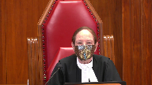

Tamim Albashir v. Her Majesty the Queen; Kasra Mohsenipour v. Her Majesty the Queen
This transcript was made with automated artificial intelligence models and its accuracy has not been verified. Review the original webcast here.
Justice Wagner (00:00:27): Good morning.
Be seated.
In the case of Tamim Abashir against Her Majesty the Queen and Kasra Moussinepour against Her Majesty the Queen, for the appellant, Tamim Abashir, Eric Bursky, and Alex Talady, for the appellant, Kasra Moussinepour, Jovan Narwhal, and Angela M. Bolt, for the respondent, Her Majesty the Queen, Lara Vidioli, for the intervener, Attorney General of Canada, and I forgot the name, Janet Dickey, for the respondent, Her Majesty the Queen, for the Attorney General of Canada, Anne M. Turley, for the intervener, Attorney General of Ontario, Michael S. Dunn, for the intervener, Procureur General du Québec, Maître Fiona Hemant.
Please note that there is a publication ban pursuant to section 485.1 and 486.51 of the criminal code that exists in this matter at the lower courts in the file 39277 and in the file number 39278.
There is also a publication ban pursuant to section 486.41 and 46.42.2 and 46.51 of the criminal code that exists in this matter at the lower courts.
Mr. Pritzky?
Speaker 1 (00:02:09): Thank you Chief Justice.
By way of brief overview, I would like to set out the position of the appellants on this appeal, why this position is the right one, and how my colleague Mr. Narwal and I are going to divide up the issues this morning.
The trial judge was right to quash the two counts that are the subject of this appeal.
That is because when Parliament enacted remedial legislation within the period of suspension imposed in Bedford, the suspension was at an end and the declaration of invalidity took effect on a retroactive basis.
This meant that the old unconstitutional law was of no force in effect.
In the absence of any transitional provisions within the remedial legislation or a prospective suspended declaration imposed by this court in Bedford, the old law was invalid.
This result in our submission gives full effect to two foundational principles.
One, it gives effect to the importance of the declaratory or what is known as the Blackstonian approach to constitutional remedies, where a declaration of invalidity is presumed to have full retroactive effect on the theory that Parliament never had the authority to enact the unconstitutional law in the first place.
And the second principle is that it respects legislative choice in terms of giving the legislature the opportunity to respond to the past and enact and the retroactive effect of the declaration of invalidity.
Justice Wagner (00:03:47): One can ask the question, what would be the purpose of suspending the invalidity if as a matter of law, at the end of the day, it’s of no meaning.
Speaker 1 (00:04:02): the purpose of of of enacting the of enact of having the suspension is to provide the legislature here parliament with the opportunity to decide how it’s going to prospectively enact the new law to cure the unconstitutionality but also on a retroactive basis how it’s going to respond to the past past uh past the retroactive effect of the declaration of invalidity
Justice Brown (00:04:32): Why do they need a suspension to do that?
They could just do it in the face of an immediate declaration of invalidity, could they not?
There’s nothing stopping Parliament from deciding what to do.
Speaker 1 (00:04:44): they certainly could do that but the the purpose why the reason why the suspension is enacted is to give parliament that opportunity to respond and keeping the law enforcement for that for that time limited period allowing parliament to decide and that’s the reason why the suspension was imposed in the first place because it’s not an easy fix it’s up for parliament to balance all the social and political considerations uh in uh in in in in in opposing a law both on a retroactive and a prospective basis now i’m going to address the legal effect in my submissions this morning i’m going to address the legal effect of remedial legislation when it’s enacted in a period within a period of suspension mr narwhal is going to address this morning the second issue arising uh which is this court’s decision in bedford the remedy imposed in bedford and in in in our submission it did not impose a prospective suspended declaration
Justice Moldaver (00:05:49): Oh, sorry, go ahead.
Justice Abella (00:05:52): Can I just take you back to a comment that you made I just wanted you to explain what what that means You said that the effect of a suspended declaration is to keep the law in effect.
What does that mean?
What’s the effect of keeping the law in effect?
Speaker 1 (00:06:09): The effect is, for the period of suspension, so when a court imposes, say, a 12-month suspension, the law is in effect, meaning that in a criminal context, people can be charged, tried, and convicted within that period of suspension.
But when the when the period of suspension ends, by either Parliament, so there’s two situations where the suspension would come to an end.
That is when the time elapses on the suspension, so Parliament does not act.
The Declaration of Invalidity, in my submission, comes into effect with full retroactive force.
Justice Côté (00:06:46): Mr. Perdsky, on what basis are you saying that the person who would commit the offense during the suspension period has to be charged, the trial has to take place, the person has to be convicted entirely during that suspension period?
Let’s say that the offense is committed the second to last day of the suspension period.
You would say that it’s not possible to prosecute that person?
Speaker 1 (00:07:11): It is possible to prosecute that person if parliament then enacts a remedial law dealing with the past.
Justice Côté (00:07:21): the remedial law, forget about the remedial law.
If there is a suspension of the declaration of invalidity and you can see that it is to maintain alive the unconstitutional law for a period of time, what does it mean?
It means that if somebody contravenes the law, that person can be prosecuted, even if the trial is taking place after.
Justice Kasirer (00:07:44): Can I add to that?
And what if there was a conviction and then an appeal after?
Conviction during and then the appeal after.
Speaker 1 (00:07:53): Well, at that point, if there was a conviction at that point, the individual would still be…
It really depends on, in my submission, on the effect of the remedial legislation.
Justice Brown (00:08:12): We’re kind of making this up as we’re going along, and I’m not blaming you, Mr. Pertsky, but that’s kind of how it is with these things.
But, here’s just a signal to you.
And maybe this is just the world we’re in with suspended declarations of invalidity, but I’m searching for a principle here.
Am I on a fool’s errand?
Speaker 1 (00:08:36): No, and the principle is, Justice Brown, the principle is the two principles, and that’s one, the Blackstonian approach, the declaratory approach to constitutional remedies, and that is where a suspension of invalidity, where a declaration of invalidity comes into force, it has retroactive effect, and that’s for a lot of important reasons.
It’s a reason why this Court has emphasized the importance of the declaratory approach.
Justice Brown (00:09:04): Principles have to be put into application.
Tell me how those principles apply to answer Justice Kazir’s question.
Speaker 1 (00:09:12): And so, in this case, for example, in the case of a suspension, where an individual is, the period of suspension has been imposed, and the law is alive for 12 months, as in Bedford.
An individual, because there is a suspension, the unconstitutional law is alive, but it gives Parliament that time to respond.
And so, when Parliament enacts remedial legislation, the retroactive effect, the suspension is over, and the retroactive effect of the declaration of invalidity comes into effect.
It is then up for Parliament, the legislature, to fill that legislative void.
So, the triggering event is the enactment of remedial legislation, and unless the court imposes a prospective remedy, it is presumed in my submission to have retroactive effect, and the remedial legislation has to, in effect, counteract that retroactive effect.
Justice Karakatsanis (00:10:14): Can I ask you this?
I think you base the retroactive effect of the declaration.
You started off by talking about the Blackstonian theory.
And I guess I take you back to G. Where the argument was made that the Blackstonian theory meant that the law was never valid.
It never existed.
It was void ab initio.
And where the court said, well, in fact, there is a discretion in the court to fashion a remedy that respects broader constitutional principles and other constitutional principles.
And there is a discretion to suspend or to fashion a remedy because of a compelling public interest.
Why do you say, and you would accept, I take it, that the court could say that there’s a transition period and that this declaration will only become effective prospectively.
Why do you say that it automatically, it has to be retroactive as opposed to looking at the circumstances and the context to determine what the intention of the court was in exercising its discretion to suspend the declaration?
Speaker 1 (00:11:35): Yeah.
I agree that it, as this court said in G of course, that it is discretion.
There’s two layers of discretion when imposing a suspended declaration of invalidity.
The first layer is to suspend it all.
That’s the first, shall we suspend this declaration at all?
And that has its own considerations.
And I say at that point, the suspension of invalidity is operating as an exception to the Blackstonian principle to the extent that it is putting a brake on the immediacy of the declaration of invalidity.
Now a second and further layer of discretion is, what is it going to be?
Is it going to be retroactive or prospective?
That’s an added another layer of discretion.
So Mr. Narwhal is going to address why in Bedford it was a retroactive, it was retroactive.
It was not prospective as argued by the Attorney General of Canada in this appeal.
But going back to the first question of suspension, that is discretionary.
It does operate contrary to the Blackstonian principle, but you have to keep in mind, in my respectful submission, the importance of the Blackstonian approach.
Parliament never had the authority to enact the unconstitutional law in the first place.
Justice Karakatsanis (00:12:57): I guess that’s what I’m trying to say.
Is it a helpful way of looking at it?
Shouldn’t we be looking at, well, what is the effect of the declaration?
As Justice Kassir pointed out, res judicata, people who are in jail and convicted of a defense that’s subsequently found to be unconstitutional, they are not allowed to take advantage of that unless they’re still in the system, unless there’s a judicial determination still to be made.
Why is it a helpful idea to say there’s this Blackstonian concept that means this has to be retroactive?
Speaker 1 (00:13:40): it the importance of the Blackstonian principle is that it is presumed to be retroactive unless the court and Mr. Narwhal is going to get into the the the why in this case it was not uh uh prospective it was it was a retroactive remedy
but it goes to the importance of the other declaratory approach to constitutional remedies it speaks to one the importance of legislative legislate the division of powers between the courts and the legislature so it gives effect to those important principles that this court articulated in g
and it also it respects the division of powers not in terms of legislative choice but the idea that judges don’t create the law they discover that it’s the um they discover that the law is unconstitutional and so it’s that theory which i say is central and so when if the court is going to operate outside of the Blackstonian principle and now it’s an it’s one thing to suspend a declaration now in this case that ship has sailed Bedford has imposed a suspension of invalidity that’s that was this court’s decision that’s one exception and that’s and that’s and that’s an exceptional thing enough but to make it in my respectful submission uh prospective saying we’re not we’re not the parliament doesn’t need to legislate retroactively because if if parlor if the court imposes a prospective remedy and in effect lets legislature off the hook in terms of enacting transitional provisions dealing with the past now in terms of the and i say that it highlights the importance of the Blackstonian approach and the importance important role that legislative choice plays in enacting remedial law on a retroactive basis and on a go-forward basis and now we’ve cited the case of swain in our supplemental argument which is that in that case the court this court imposed a six month suspension of invalidity on the unconstant what this court found was an unconstitutional detention scheme for ncrmd accused the court’s declaration was a suspended declaration in my respectful submission it was consistent with the Blackstonian approach a retroactive remedy a retro had once parliament enacted remedial legislation had retroactive effect and so that’s why when parliament responded to the within the period of suspension it enacted a new law going forward a constitutionalized detention regime but in in the past said okay
well we’re gonna we’re gonna authorize those old unconstitutional detentions
but we’re going to eventually bring these old guys into the fold and so in my submission that demonstrates why the the the default position is retroactivity and that’s why parliament had to in response to swain enact transitional provisions dealing with the past
and it was a consider my respectful submission a considered determination to say well otherwise be otherwise as this court because of the declaration of invalidity these individuals we go would go free which was the reason what this court imposed a suspension of invalidity so that demonstrates in my respect
my my submission the the the effect of a declaration of invalidity and why parliament has to legislate in the past and why that is a matter of legislative choice and we see it even in this
Justice Abella (00:17:03): Thank you.
Justice Côté (00:17:05): No, it doesn’t, I don’t know.
Mr. Persky, so it means that if we follow your position, the practical effect of it would be that until the declaration in Bedford, your client could be prosecuted for their conduct.
During the 12-month, the suspension of 12-month, they cannot be prosecuted.
And under the new legislation, their conduct can give rise to charges.
So it means that the way they behave could be prosecuted before Bedford, under the new legislation, but the suspension period of 12 months, then they would be impugned, immune of any prosecution.
Speaker 1 (00:17:49): No, no.
What would be happening was that the process would continue as if the law was enforced until remedial legislation, because that’s the triggering event when the suspension ends and the declaration kicks in with full retroactive effect.
It is then up to Parliament to say, here are some transitional provisions.
And in my submission, what Parliament would be doing would be to say, well, we’ve got to make sure, mindful of our constitutional obligations in Section 11G, that we’re not criminalizing new or different forms of conduct, but we’re going to track exactly what was said in Bedford, which is criminal conduct.
And it’s up for Parliament in enacting transitional provisions to say, okay, this is the law on a go-forward basis.
But for people previously charged, convicted, these offences will be offences.
It’s exploitative conduct.
That was the seed of the constitutional offence before.
It’s not the unconstitutional aspects.
Justice Côté (00:18:49): So if the parliament does nothing, let’s say that the parliament does nothing, but you agree that during the suspension period the law is still alive, you agree with that, but let’s say that the parliament does nothing, does it mean that the person who contravened the law during the suspension period cannot be prosecuted?
Speaker 1 (00:19:12): Yes, the process ends at that point and that’s what the trial judge found here.
The charges of no force and effect and there’s no other law and so what would happen is that law is then of no force and effect and if Parliament were to enact, did not in this case, new legislation catching conduct before, the Crown would charge that individual, amend the indictment, any number of things.
Justice Brown (00:19:39): palatable as that scenario that Justice Cote painted for you seems, I assume that the answer to that would be, well, that’s Parliament’s choice.
Parliament could have acted, Parliament didn’t act, Parliament could have legislated retroactively, it didn’t, Parliament could have done other things, it didn’t.
That’s Parliament’s call.
Speaker 1 (00:19:58): Yes, that’s correct.
And that’s effectively what happened in this case.
So there’s a, in my respectful submission, there’s a solution to this problem.
That is Parliament enacting remedial retroactive legislation. Although
Justice Rowe (00:20:13): Now, you said something a moment ago, which I don’t want to lose, and it may sound like a trivial point, but to me it’s not.
Maybe I’m alone.
If I understood you correctly, you said that when the remedial legislation is enacted, that brings about the end of the suspension of the Declaration of Invalidity.
Did I understand you correctly?
Speaker 1 (00:20:45): It brings an end to the suspension and the declaration comes into effect with full retroactive force.
Justice Rowe (00:20:53): Okay.
How is that possible?
And I’m going to open up that question for you.
It seems to me that parliament can enact legislation, it can repeal legislation, it can amend legislation.
How can parliament, by its actions, vary an order of the court saying that a declaration is suspended for a given period?
Speaker 1 (00:21:33): So I’ll answer your question Justice Robe in two ways.
I’ll first say that the purpose, so that the two ends of the suspension are the elapsing of the period of time, for example the 12 months, and Parliament does not act during that time, it comes into a force.
But the second point is on remedial legislation, with remedial legislation, the suspension comes to an end because there’s no purpose of a suspension anymore.
The purpose of the suspension has been fulfilled.
Justice Rowe (00:22:03): saying to me that by operation of law, the enactment of new legislation causes the order of the court to be modified and terminated pre-earlier than the court has ordered.
That to me is magic.
I don’t understand that.
Speaker 1 (00:22:27): So in my submission, the effect of Parliament enacting is not changing the declaration.
The declaration of invalidity is in effect.
And that’s in my submission that the, with the Court of Appeal that.
You’re not good.
Justice Rowe (00:22:45): You’re not listening to me, I’ll try one last time.
It’s not the Declaration of Invalidity, it’s the suspension.
If the court says this Declaration of Invalidity is suspended for one year, then it’s a year.
Unless it says it’s suspended for a year, or if parliament puts in place remedial legislation, that’s shorter period.
But if the court says it’s a year, then it seems to me it’s a year.
And parliament can do what it likes.
But it’s still a year.
But you’re telling me no.
Speaker 1 (00:23:21): Well, in my submission, it is implicit in the suspension that the suspension will come into effect, but once Parliament steps in and enacts remedial legislation, in my submission, the suspension is then at an end, because the purposes of the suspension are satisfied at that point.
Parliament hasn’t had an opportunity to respond at that point.
So you don’t-
Justice Brown (00:23:49): Well, you don’t want, and we’re obviously going to hear from Mr. Narwhal about this, but you presumably don’t want us to imply from the judgment of Chief Justice McLaughlin in Bedford that this was a prospectively operative declaration.
But you want us to imply, presumably from her statement that she’s concerned that prostitution would be totally unregulated while parliament grapples with the complex and sensitive problem, right?
That’s what you’re wanting us to imply.
So don’t imply the temporal operation, but imply that it’s meant to be preempted by subsequent legislation.
Speaker 1 (00:24:41): And if I can just pick up on the Justice Brown, the word you used, preempted.
That’s a court of appeal, use that word, it preempts the retroactive effect.
The enactment of remedial legislation preempts, it doesn’t preempt.
The declaration comes into effect at that point.
Justice Brown (00:24:57): But Justice Roe’s point, okay, so instead of preempts, it amends it.
It amends the order suspending the declaration.
That’s Justice Roe’s concern, right?
That the court orders the suspension of the declaration for 12 months says nothing about the effect of subsequent legislation.
You’re saying that the declaration is effectively amended because it is implicit in the granting of the suspension.
It might even be implicit from paragraph 167 of Chief Justice McLaughlin’s reasons that new legislation ends the suspension and it takes immediate effect.
Justice Rowe (00:25:44): And I’d go so far as to say, by so doing, you seem to have conceded what appears to me to be the linchpin of the argument or the reasoning of the British Columbia Court of Appeal.

And that’s why I put the question to you.
If you want to, if you want to insist to us that the doctrinal basis of the BC Court of Appeal decision is sound, I’ll accept your submission.
Justice Moldaver (00:26:11): Could I just interrupt here for a sec, in line with that question, just to ask you this.
It seems to me there’s two purposes behind the order that this court made.
One is to give Parliament an opportunity to reflect and come out with new legislation.
And so we’re not effectively saying you must take a year, or that, you know, if you come out before that, you know, your order won’t be, your new legislation will be invalid.
One of the sole, one of the main purposes of it is to give Parliament the time it needs, whether that be six months, eight months, or a year.
So I’m kind of of the view that I don’t think there is a problem coming out early, and I don’t think there’s a problem with it impacting on the suspended declaration.
But the second part, and probably from the, when I look at the AG Canada’s position, and one within, with which with respect I agree, the second part is to try and protect people during this period who are vulnerable to people like your clients, and who are going to get abused and controlled and beaten up and everything else and extorted during that period.
And that is a vital part of this legislation where the court is effectively saying that law will stay in force, that law, which has been found to be unconstitutional, will be extended for up to a year while Parliament does what it wants to do.
But in the meantime, we are going to send out a message that we are protecting a vulnerable group of people in society, and here’s the message, people like your clients.
If you commit this crime during that period, you will be vulnerable to be charged and convicted criminally for doing it.
Otherwise, and that’s the deterrent effect, I would say, the deterrent effect of the suspension.
And so the AG Canada says, you know, yes, the court didn’t say it’s prescriptive, but we can infer it’s implicit in an order like this that the court intended it to be prescriptive, so that it could protect the people that it was designed to protect.
Speaker 1 (00:28:40): In terms of what I’ll do, I’ll hand it over to Mr. Narwhal because Justice Moldova, your question about the prospective nature goes to what Mr. Narwhal is going to speak about, and I’ll hand it over to him in a moment, but I just wanted to finish off my point on the legal effect by saying that there is the purpose of the suspension in this case.
And I disagree with the Crown in this case, which says that there’s no reason, if we’re right, there’s no reason you would ever impose a suspension.
We have to keep in mind the importance of legislative choice and then so when this suspension is at an end when Parliament responds, because the purposes of the suspension have been met.
It’s going on, the period of suspension is going on longer than necessary.
That’s why it ends when the Remedial Legislation is enacted.
So I’ll turn it over to Mr. Narwhal to address the prospective nature of the remedy imposed in Bedford.
Justice Wagner (00:29:41): Thank you.
Speaker 2 (00:29:55): Thank you.
In my respectful submission, the remedy in Bedford did not operate outside of the Blackstonian paradigm, it did not deny retroactive effect, and the court did not impose a prospective remedy only.
In my respectful submission, the jurisprudence in the academic commentary demonstrate that a prospective only remedy is first a drastic departure from the Blackstonian paradigm, that must be rare, and when rarely imposed, explicitly stated.
And so, to illustrate those points,
Justice Moldaver (00:30:33): Excuse me for a moment.
This court in G, Justice Kerikatsanis speaking for the majority, made it very clear that these suspended declarations are to be only ordered in exceptional circumstances, exceptional cases, and if I understand the reasons graspily, the reason for the order in Bedford would clearly come within one of those exceptions, i.e. the protection of society, and particularly the protection of a vulnerable group.
So we start off with an exceptional order, but from what I can understand, the defence here wants to say, but it really doesn’t mean anything.
Speaker 2 (00:31:17): Oh, I, Justice Moldaver, I think, at least from my respectful submission, we’re dealing with layers of discretion.
So the imposition of a suspended declaration is in itself exceptional.
However, to say that the remedy of the court is perspective only is, in my respectful submission, the very apex of the discretion that’s available.
Because that is contrary to the otherwise applicable Blackstonian paradigm.
So the point I wish to make then is that when the court elects to make a perspective only declaration, in those circumstances, there has to be a consideration of that question and also an explicit statement to that effect.
That this remedy, this order is meant to apply prospectively only.
And to just, to illustrate that, if I could just draw the court’s attention, please, to the condense book, the appellant’s joint condense book, please.
And specifically starting at tab one.
This is, of course, the Bedford decision.
And I’d like to draw the court’s attention, please, to the final page of that tab, which should be paragraphs 166 to 169.
All right.
So in my respectful submission, in Bedford, on the question of remedy, the court considered whether a declaration of invalidity should be suspended and if so, for how long.
That’s reflected at paragraph 166.
Let’s jump down then to 169.
The opening sentence of that final paragraph says the choice between suspending the declaration of invalidity and allowing it to take immediate effect is not an easy one.
So between those two paragraphs, we have the court considering the question of the validity, the suspension, and if so, for how long, which I say, yes, is an exceptional layer of discretion.
But if we move, then, to the question of…
Justice Moldaver (00:33:51): I’m sorry to interrupt you, but you just left out paragraph 168, which of course is the paragraph that the court found to be paramount and why it made the order.
So maybe you want to look at 168.
Speaker 2 (00:34:05): Well, I was going to get to 168 and so my point with respect to 168 is that there were other remedial techniques available to the court in Bedford.
For instance, the Bedford court could have issued an order creating exemptions.
It could have specifically indicated that that there’s a carve out of the provisions to allow for certain prosecutions.
In my respectful submission, not doing so in the context of these passages reveals what I think was the court’s application of the Blackstonian paradigm.
Justice Moldaver (00:34:47): to me that if we’d done that we would be interfering with Parliament’s role and we would be somehow defining what the law should be or will be in circumstances where it’s completely unnecessary, where we leave it to Parliament to make the call and what we do is in the interim we say beware out there if you commit this crime pending that you’re going to be prosecuted.
Speaker 2 (00:35:14): Right so you know going back to Mr. Pertsky’s point I mean the appellant’s position is that when the declaration of invalidity we say when it came into effect those laws were struck from the statute books we say the parliament had an opportunity act it could have created a new set of legislation giving it a transitional effect and capturing the conduct that would have been properly still criminalized within the holding of Bedford.
And so turning then back to the question of the perspective versus the retroactive if we turn to an example and I think it’s a critical example of the court of this court imposing a prospective remedy then in my submission what we can derive from that is first of all its rarity and the reality that it must be explicitly stated.
So if we turn to then tab two of the condensed book please.
This is the PEI judge’s case.
An instance in which the court did impose a a prospective remedy and said so explicitly.
So if I could please draw your attention to paragraphs 17 through to 20 which are reflected at the the final two pages of that tab.
In my submission under the heading transitional transition period within paragraph 17 and 18 the in my submission what the court says is that in order to prevent a disruption in the administration of justice the court will the court suspended the requirement of the creation of this administrative type tribunal for one year after which the quote the judicial compensation requirement will apply prospectively and you’ll see that line reflected at the final pair at paragraph 18 the final line.
If you turn the page then the court reflects on the significance of issuing a perspective only remedy at paragraph 20.
At paragraph 20 the court says I note that the prospectiveness of the judicial compensation requirement does not change the retroactivity of the declaration of invalidity made in this case.
Then I say in my respectful submission there’s a critical sentence then at the end of paragraph 20 where the court says in rare cases in which this court makes a prospective ruling it has always allowed the party bringing the case to take advantage of the finding of unconstitutionality.
Justice Karakatsanis (00:38:26): Can I ask you this, I’m sorry to interrupt you, but I guess I think we all agree with you that it would be far, far better if the court were to be explicit in the remedy and exactly outline how it is to apply.
And the hope is that after G, that will be the case.
But the reality is, I think, that for most of our cases, it hasn’t been always explicitly stated how specifically it’s going to play out, or it hasn’t been the same kind of detail been given to the various choices that were made.
And so we have to look at the context.
We have to look at what was said to decide what was the intention of the court.
Speaker 2 (00:39:27): Right, and so in my respectful submission, first of all, and this goes back to some of the questions that were posed to my learned friend Mr. Persky.
First of all, I don’t think we can imply terms in my respectful submission to the order made in Bedford.
I don’t accept that as the Attorney General of Canada holds that we could add more terms to the order.
The point I wish to draw from the cases from the PEI judges case is that the court was clear as to which aspects of the ruling would apply prospectively, characterizing prospective rulings as rare.
And going back to a comment I made earlier on in my submissions, when we deal with the question of prospective only rulings, that is in the context of remedy, I say the apex of discretion, which contains different considerations.
And in the context of Bedford, the question of perspective only didn’t arise, I say quite obviously, because it wasn’t the sort of case in which a perspective only type of remedy, I would say, is generally available.
But what I’m going to do, just to sort of pick up on these two points that I’ve made in response to the question, Justice Carrick at Sanits, is I’d like to draw the court’s attention please to the fourth tab of the condensed book.
This is an extract from the concurring decision of Justice Bastarach in Hislop.
And I’ll draw your attention now, and I may turn back to it later, to paragraph 161 of the decision, which is captured on the first page of the extract.
Paragraph 161, it says, first, the question of whether to deny a retroactive remedy is different from deciding whether to grant a suspended declaration of invalidity.
The same considerations do not apply to both.
In my submission, that’s a very important context to the question of the perspective only ruling, which I say different considerations apply, and that is a higher form, the apex of discretion for the court to impose a perspective only ruling.
And the reason why then, I say that in the Bedford ruling, the question of perspective only didn’t arise is because perspective only rulings are, as the court said, extremely rare and generally arise in specific types of context.
So to make that point, I’d like to draw the court’s attention please to tab three of the condensed book.
This is a, this is a article from Professor Leckie called The Harms of Remedial Discretion.
Professor Leckie has a few passages within this article which provide, I think, a helpful analysis to the question of retroactive effect versus perspective effect.
And he puts it better than I ever could. So,
Justice Wagner (00:44:21): If you can hear us, Mr. Narwal, we lost you.
Speaker 3 (00:44:36): Mark.
Mr. du Général-Cheff, unfortunately, Councillor Narwal has lost connection to the Zoom session.
We are currently attempting to contact him to regain his access.
Justice Wagner (00:44:50): Thank you.
So what we will do, we’ll take our morning break, 15 minutes.
Thank you.
Justice Moldaver (00:45:57): CORE
Justice Abella (00:46:04): Thank you.
Justice Wagner (00:46:20): Thank you.
We can be seated.
Mr. Narwal, you’re back and you still have 15 minutes.
Speaker 2 (00:46:29): Thank you.

I apologize to the court.
I’m deeply embarrassed by that and quite mortified as that literally was my worst nightmare.
I’ve now switched spots with my with my colleague and I’ll pick up from where I was.
I was about to take the court through what I say are some important helpful passages from the article of Professor Leckie and specifically I’d like to draw the court’s attention please to page 598 being the second to last page of that tab.
In the final paragraph of that page you’ll see a sentence that begins on a more critical reading the choice between retrospective and prospective rulings liberates the courts from the constraints of retroactive effect.
Where judgments apply retroactively that effect limits courts to announcing new rules where they have considered the harms of changing law but conclude that the law that the new rule is so important and so clearly within the province of judicial creation and alteration as to justify its retroactive application to the case before the court and to subsequent cases.
In contrast courts with the discretion to make their rulings perspective are free to announce rules or to make decisions that quote would have been relatively unpredictable prior to their promulgation unquote.
That is prospective rulings reduce the cost of creating new rights or of significantly altering the context of existing ones since doing so does not disturb past legal offense.
And this this we’re leading into then a few sentences which I think are extremely important because they they also relate to the PEI judges case that I took you to earlier.
It goes on the cases involving institutional structures are especially relevant here.
In the Canadian judicial compensation appeal the possibility of a prospective declaration liberated the supreme court to derive a specific administrative structure from the constitutional guarantee of an independent judiciary.
Given its detail and lack of pedigree in authoritative sources it would have been absurd to imply as retrospectiveness would that such a requirement had always been latent within judicial independence.
In my respectful submission going back to the submissions that I made earlier that you know they the perspective only ruling is the apex of discretion.
It must be rare and when imposed must be explicitly stated.
The PEI judges case is an example of where that type of order was made in a very exceptional and rare context where the court was imposing a new administrative structure and in that context the court indicated that that that the order would be perspective only and was also self-conscious about the reality that they were making a rare prospective order and specifically mentioned it in the passages.
There are other contexts where a prospective order may be important or may be relevant or may speak to a context where the apex level of discretion must be exercised and that’s for example in cases that involve benefit schemes with financial implications where at the end of the day retroactive effects may end up being in practicality in practical terms amount to almost a compensatory order for damages and in those types of contexts in my submission we reach the point of a consideration of apex discretion.
Turning back to Bedford then Bedford was not that context.
Bedford was a case in which the court found over breath in relation to the the parliamentary scheme that that imposed restrictions on sex work.
In that context the type of instances the the types of circumstances where prospective rulings may be applicable simply did not arise and so I want to go back though to a point that Justice Moldaver made and I think that the sentiment is reflected in some of the other questions that were posed by the court.
In my respectful submission the locus of the analysis of what the court ordered in Bedford and its implications should focus on section 52 sub 1 and giving section 52 sub 1
it’s the effect that the constitution demands.
In my respectful submission the question of how best to prosecute these men or whether these men should be prosecuted and how are questions that are not directly relevant to the question of how do we give effect to section 52 sub 1
and so the submission of the appellants and I’ll sort of before I sort of move into this train of thought I’ll note I’ll note that you know for instance in G in the dissenting reasons there was a recognition that the that the holding in Bedford had caused some confusion that there were different approaches across the provinces about how to deal with the Bedford remedy and it was in reference to an article in which Professor Leckie had made that observation.
Well as Mr. Pertsky indicated in his submissions what we say the important point of all of this is that in Bedford the court imposed a suspended declaration to allow parliament to act.
We say parliament could have acted they could have imposed a retroactive law that captured the criminal conduct that was not struck down in the context of Bedford and to then clearly provide that message to the crown that this is a mechanism and a route by which you know prosecutions can continue and in my submission that’s a critical aspect to giving effect to section 52.
Can I ask you yes of course finish finish your sentence I’m sorry.
I’ve lost my train now.
Justice Karakatsanis (00:54:23): I apologize for that, but I did…
Overlapping speakers (00:54:24): Cut it off.
Justice Karakatsanis (00:54:25): your views on something that I’m not sure has been raised.

If we all accept that parliament could pass retroactive legislation and could do so either explicitly or by necessary implication, is there an argument to be made that there’s a necessary implication here?
And I’m thinking of the Roach and Chaudhry article that says when you’re looking at remedial legislation that’s addressing the specific constitutional infirmity identified by the Supreme Court within the period of suspension and the effect is to address specifically that, that there should be a presumption of retroactivity or perhaps I wouldn’t go that far but ask you whether there’s a necessary implication that parliament intended that there be no gap in liability for exploitative behaviour.
Speaker 2 (00:55:31): And that’s something that I had on my notes to actually refer to.
The question that the parliament’s action is the indication that the exploitative conduct needs to be regulated and prosecuted.
And we say that it’s parliament’s role to act in that.
Justice Brown (00:56:01): in that context.
But that’s not quite what Justice Karakatsanis is asking you.
She’s asking you whether there should be a presumption that parliament intended by legislating to legislate retroactively.
I should clarify.
Okay, maybe I’ve got it wrong.
Yeah, you went further.
Justice Karakatsanis (00:56:22): The article suggests that perhaps there should be a presumption.
My question is, can we say that by necessary implication in this specific context that Parliament intended it to be retroactive?
Speaker 2 (00:56:38): In my respectful submission, there can be no such presumption without a specific transitional term within that new legislation.
Justice Martin (00:56:52): And may I go back to the finding in Bedford?

I mean, it’s interesting to me and what implications does this have?
The 212 was overbroad, right?
And it would have been available arguably to the court in Bedford to read down the provision
and they chose not to do it.
And they chose a remedy that invalidated the entire provision, as I understand it, and then suspended it.
How does that impact on what you’re putting forward and your argument about how Bedford needs to be read now?
Speaker 2 (00:57:33): Well I think that that’s an extremely important aspect to the order that was made.
The fact that the court did not carve out an exemption in my submission is signaling the fact that this was meant to be a retroactive order as most orders are unless they are explicitly said to be prospective only and having done so gave effective 52 sub one by striking it down and then when the declaration comes into effect it’s struck from the statute books.
So when at least in my reading of Bedford it makes it clear that there are to be no prosecutions under these particular provisions and handing the ball off to then the parliament to craft new provisions that could apply retroactively without offending 11G as long as they capture aspects of those offenses that were not implicated by the specific constitutional concerns and that it was parliament’s duty to act and they did not in my submission.
And so the idea, the way I at least look at it, is you know to allow a prosecution of offenses that were struck down with an indictment laid years after the declaration of invalidity coming into effect ends up being an end run around in my submission what the Bedford ruling was.
Justice Rowe (00:59:23): I don’t want to be pedantic, it’s a minor point, but you said that the law would be struck from the statute books.
That simply is inaccurate.
The only way which something is struck from the statute books is if it’s repealed by parliament.
It may be rendered invalid, but it still remains a law, but it is a law which is of no effect.
I mean, I’m not sure anything at all turns upon it, but I think there’s a degree of clarity which needs to be maintained here.
Speaker 2 (00:59:58): All right.
Well, Justice Roe, my use of that phraseology emerges from some of the cases.
So for example, if I could draw the court’s attention to page seven of my factum.
That’s the Mizanapur factum.
Actually, page six probably makes the point better and more succinctly and efficiently.
In paragraph 15, I say that in Ferguson, Chief Justice McLaughlin for a unanimous court also affirm 52 sub one operates independently of judicial decisions and that it acts to effectively remove an unconstitutional law from the statute books, or in other words, render it void ab initio.
So just turning over the page, on page seven, there’s an underlying portion of the extra from Ferguson where the court says to the extent that the law is unconstitutional, it is not merely inapplicable for the purposes of the case at hand.
It is null and void and is effectively removed from the statute book.
So I should have clarified my submissions to say that it’s effectively removed from the statute books.
Justice Brown (01:01:12): Your point is it just amplifies the retroactive effect. Indeed.
Speaker 2 (01:01:16): You
Justice Moldaver (01:01:17): Can you help me out with something, though?
I’m sort of struggling myself to figure out what sort of language the court could have used in Bedford.
Declared that the legislation is unconstitutional, what, to the extent that it captures people who really want to be nice and helpful to sex workers?
I mean, you’re asking us to effectively draft a provision that is so broad.
I mean, I don’t know what it means myself, even as I say it.
And it seems to me that that is why the court did not go the route you’re suggesting it could have, because it’s an impossible task, it seems to me, unless we are going to somehow, you know, get into the legislation business. Right.
Speaker 2 (01:02:05): Right, and that actually, at least the way I see it, speaks to my point, Justice Moldaver.

In my submission, the court had no choice but to strike it all down in the context of Bedford because of the complexity and nuance of the operation of all of these provisions.
And in my submission, now we should not be looking backwards to imply further terms to the Bedford Order that simply were not imposed and not reflected in the terms of the remedy.
And I see that I am now.
It wasn’t him, I mean, I think it was.
Justice Brown (01:02:42): I didn’t sit on Bedford, but I seem to recall the trial judge had a tailored order.
Speaker 2 (01:02:50): I don’t have a recollection now handy of the tailored order but in my submission when it when it reached this court, the apex court, there was no such thing.
Overlapping speakers (01:03:02): the apex of discretion.
Speaker 2 (01:03:03): And the apex court applying the apex of discretion chose not to impose a prospective remedy or create exemptions.
And I think that that’s all very significant.
Thank you very much.
Justice Wagner (01:03:15): Thank you, sir.
Speaker 4 (01:03:24): Yes, Chief Justice, Justices.
A suspended declaration of invalidity is a judicially created remedy, as are reading in, reading down, and severance.
Section 52 sub 1 of the Constitution Act provides the authority for a declaration, but it does that implicitly because it states that the law is inconsistent with the provisions of that, sorry, that any law that is inconsistent with the provisions of the Constitution is to the extent of the inconsistency of no force or effect, and that modifier is important to the extent of the inconsistency, and it’s something that the appellants effectively ignore in my submission.
The development of these various judicial remedies all recognize that the Blackstonian or the declaratory approach, while still applicable in some cases, does not fully address the complexities of modern law, and most particularly of modern constitutional law.
They recognize that a law may only be bad in part, i.e. the extent of the inconsistency.
Put more simply, we don’t really live in a Blackstonian world, and Justice Carrick-Sanis, I would say that’s what this Court recognized in G, in taking the principled approach to suspended declarations of invalidity.
Justice Abella (01:05:01): So I just want to be clear then about what that proposition means.

Does it mean that the law survives to the extent that the court did not declare what portion of it was rendered the law unconstitutional?
I’m trying to get your your point.
Speaker 4 (01:05:22): If the court had simply declared the law invalid and not given Parliament an opportunity to act, then the law would be void in its entirety.
If, however, the court did what it did in Badford, which is to suspend the declaration of invalidity to allow Parliament to act, then the law lives on.
And Parliament did act.
And so the law continues to have a life for the period of the suspension.
Justice Abella (01:05:58): the Blackstonian concept which is that a law is invalid, an invalid law is deemed to be invalid as of the time it’s passed.
Do you challenge that proposition because if you do you’re right, it changes the whole paradigm or do you not?
Speaker 4 (01:06:19): I don’t, I do
and I don’t, which is not much of an answer.
What I say is this, that the law is only of no force and effect to the extent of its inconsistency, so the Black Stonian approach is not entirely consistent with that notion if the court is striking an entire law where only part of it is bad.
And in Bedford it kind of illustrates to me the awkwardness of the Black Stonian approach because the two other provisions that this court found unconstitutional in Bedford, the communicating and keeping a common body house provisions, had been found to be constitutional previously in the prostitution reference.
And this court reconsidered that law because it was challenged on a different basis but also because this court’s jurisprudence on overbreadth, arbitrariness, and gross disproportionality had basically developed in the 20 years prior to the Bedford decision, i.e. after the prostitution reference.
And so it sits awkwardly that a law that was deemed constitutional at one point in time has now evolved to be unconstitutional and the Blacks too because it’s overbroad, because it has effects that are not directly connected to its purpose.
And the Black Stonian approach says the law never existed because it was invalid.
Justice Abella (01:07:48): That’s the syllogism I want to work through with you.
If it’s not Blackstonian, what is the, when a law is declared invalid, forget about a period of suspension, what is the effect, the legal effect of that declaration on the law?
Is it invalid ab initio or is it only invalid going forward if we don’t have a Blackstonian framework?
Speaker 4 (01:08:19): Well, I think it’s open to the court to state that, absent any statement by the court, the Blackstonian paradigm would still operate.
But again, the authority of the court rests in the extent of the inconsistency.
Thank you, Your Honor.
Justice Abella (01:08:37): So a suspension says it’s not invalid until one year later at which point it is deemed to be invalid.
Is that right?
Overlapping speakers (01:08:49): Yes.
Justice Abella (01:08:50): And at the end of the year, is the invalidity as of the beginning of the law being passed?
Or is it from the end of the suspension, which means we have a different approach to declarations of invalidity when there is no period of suspension and when there is?
Speaker 4 (01:09:13): Well, the purpose of the period of suspension is to allow Parliament to act.
So if Parliament acts, it’s the respondent’s submission that the declaration never takes effect because Parliament acts prior to the expiry of the suspension.
If Parliament doesn’t act, then yes, it has the full retroactivity.
Justice Rowe (01:09:32): to the fact.
Yeah, okay.
That’s the magic that I don’t understand, that by the enactment of legislation, the order of the court is varied.
And, A, I don’t understand how that operates.
I have no comprehension of the mechanism whereby that would operate.
And second, does it not necessarily give rise to an uncertainty as to the efficacy of the suspension because you don’t know whether there’s going to be law enacted during the period.
But the principal points, the first one, how can, what is the mechanism whereby the enactment of legislation by Parliament or provincial legislature can vary the order of the court.
Speaker 4 (01:10:26): Well, in my submission, it’s not varying the order of the court.
The provision that the court found unconstitutional in this case was repealed.
In, for example, Carter, it was replaced.
Justice Rowe (01:10:39): But the repealing of a statute is one thing, the repealing or the modification of a statute is one thing.
The varying of the operation of the order of the court is something else.
And you’ve said that by virtue of enactment or amendment, the order of the court is amended.
And I don’t understand that.
It’s just, as I said, magic.
Justice Abella (01:11:06): Actually, Carter is a very interesting example.
So if during the period of suspension, the court grappled with whether exemptions could be given during the period of suspension, but if during the period of suspension someone had been charged because the government acted and introduced some form of legislation during that period, are you saying that revives an invalid or revives a statute the court has said is invalid? Yes.
Oh, and is that a principle that comes from what?
Speaker 4 (01:11:50): it comes from the the respective roles of the courts and the legislature.
The the court said this law has problems, it has constitutional defects, we’re suspending the declaration of invalidity to allow parliament to act and parliament has acted.
And then my my and I I agree that that creates then an issue to which I say the solution is a remedy is an individual remedy for someone who would fall within what is now the exemption under the new law or what fell within the overbread um in carter or in bedford within the constitutional infirmity of the original law.
Justice Brown (01:12:36): We don’t even know why the court suspended in Carter, unlike here they gave no reasons, just suspended.
Speaker 4 (01:12:45): Yes and and and that well we we have their reasons for why the provision was found to be constitutionally.
Overlapping speakers (01:12:55): right but we don’t have
Speaker 4 (01:12:56): their reasons for specifically for why they chose that particular remedy
but I think it’s fairly clear that that was to allow Parliament to act.
Justice Brown (01:13:10): So we’re going to imply reasons in Carter and we’re going to imply from reasons in Bedford an intent that it be perspective.
There’s a whole lot of implications going on here.
I just wonder, again, I suggested Mr. Persky, I think we’re making this up as we’re going along.
Justice Karakatsanis (01:13:29): Okay, go ahead, answer
and then I’ll pass it on.
Speaker 4 (01:13:31): I was going to say, well we are, to an extent, I mean this is in many ways an issue of first application by this court because the actual effect of suspending a declaration of invalidity, of Parliament then acting and enacting new legislation, particularly in the criminal law context where we are talking about a substantive offence, we’re not talking about a procedural law that can be made retrospective or retroactive or civil law which can be introduced retroactively, we’re talking about a substantive criminal offence.
And so to an extent we are making this up and we’re in part making this up because this court and other courts have not always been clear about why they are choosing a particular remedy and the implications and extent of that remedy.
And I think following G that should change because the requirement of G is for the court to be more explicit in my submission.
Justice Karakatsanis (01:14:38): Can I ask you my question then and take you back to maybe first principles here?
We have been talking about what’s the effect of a declaration, whether it’s perspective, retroactive, and a declaration of course as good as against the world.
But my question to you is how do we factor in the difference between a declaration of invalidity and a judicial determination that a law is unconstitutional?
In the sense that a provincial court judge or any judge who finds that there is an unconstitutional law will not apply it.
So whether or not this declaration is perspective or retrospective, there has still been a judicial determination that the law is unconstitutional in certain ways.
And to the extent that a specific issue comes before a court, whether it be an appeal, whether it be 24-1, whatever basis, the court can apply the finding of unconstitutionality at the time it deals with it, whether or not this declaration is perspective or retrospective.
And I guess I think that’s an important distinction to bear in mind because the rights flow from the finding of judicial, of the judicial determination of unconstitutionality, but the effect of a declaration maybe is different.
So if you can kind of talk about it in that context, I think that may be helpful.
Speaker 4 (01:16:18): Well, I agree with that, that that’s, you know, and the mechanism by which that operates is what’s somewhat unclear, because, as I said, this is the first time this has arisen in this context.
But essentially, that that’s what happens, the declaration doesn’t come into effect, but the finding of unconstitutionality remains and can be applied by courts.
It’s the mechanism by which they apply that, and I would suggest that the remedial provisions of 24.1, whether they’re in terms of a constitutional application or whether they’re in terms of an abusive process application, would apply in those circumstances, and the finding of unconstitutionality would determine whether, in that particular case, the law was of no force in effect.
And I appreciate that there’s a certain degree of uncertainty in that, but there’s no more uncertainty in that than in any other application of the charter or in any application of the facts to the case at the bar.
Whether the exceptions in the new provision apply or not will often be a finding of fact for a trial judge.
Justice Abella (01:17:37): Can I keep you in the charter for a second and refer you to another g and that’s 11g. The right not to be found guilty on account of any act or omission unless at the time of the act or omission it constituted an offence under Canadian et cetera.
If we get rid of blackstonian principles then I agree we may be in new territory and things are open.
But if we’re not overturning that proposition then something that was declared unconstitutional ab initio subject to a delay of that declaration ab initio for a few months can nonetheless be the subject of a charge and I’m wondering if that doesn’t run up against 11g and the right not to be charged with something that’s not a valid offence.
Speaker 4 (01:18:46): Well, I think 11G encompasses the, really speaks to what is also the rule of law, which is a certainty to know what the offense was.
And the offense is prescribed by how the offense provision itself and this court’s ruling in G and the remedial legislation.
So I don’t think it runs up against 11G. I think what does run up against 11G is the appellants contention that parliament could have made the new provision or could have made some provision retroactive.
Because what parliament did was it repealed the old provision and enacted an entirely new scheme.
And the, while the conduct of the appellants was culpable both under the old scheme and the new scheme, that isn’t necessarily the case for every person.
While the offenses are targeted at the same conduct and while they are very similar, the elements of the offense are not identical.
212 was a charge of living wholly or in part on the veils of prostitution.
And in the new offense, it’s receiving a material benefit, financial or otherwise, with a list of exceptions.
And the exceptions themselves, I don’t think necessarily changed the character of the offense, but the actual element of the offense receiving a material benefit is not identical to the old offense.
And so I don’t think it was open to parliament to retroactively enact that provision and reach back in time.
That has to come some other way.
Justice Rowe (01:20:32): Okay, I’m going to put a proposition to you that if I were defense counsel, I would make exactly the same point that you have made about the newly enacted offense.
But if I were crown counsel, my reply would be, it’s justified under section one, so that there is no gap in terms of the sanctioning of this behavior, which has been recognized throughout the whole sequence as being blameworthy and properly subject to criminal sanctions.
Speaker 4 (01:21:09): Well, but these this this conduct, the conduct that the appellants were specifically found guilty of, and they were found guilty both, they were found guilty of basically a continuing offense, one that started under the old provision during the period of the suspension and continued well into the enactment of the new provision, they were charged under both provisions.
And in effect, the trial judge made a finding of guilt on the old provision before quashing it, and convicted them on the new provision.
So their conduct never fell within the constitutional infirmity identified in Bradford, and doesn’t fall within any of the exceptions in the new provision.
So, so in that context, I would say that you’re right.
But if on the other hand, this was an accused person who established that he fell within the constitutional infirmity or the exceptions in the new provision, which are designed to address that constitutional infirmity, then I would say that he has a valid argument, even as the crown, because that’s my role as the crown.
Justice Martin (01:22:23): May I go back to when you were talking about the act of legislating and and its its impact.
We’re doing we’re thinking about that on the assumption that the legislation that is put in as the remedy is itself constitutional and all of the premises of of of Professor Hogg and that say oh this will be the effect if the intervening legislation or what parliament produces in the second go around like the material benefit provision is constitutional.
How do we factor in the possibility that that the replacement legislation that’s put in place in time is not itself constitutional?
What does that do to your theories and analysis?
Speaker 4 (01:23:17): Well, I mean, it’s open to challenge the new legislation on its constitutionality, but I don’t think it has the effect of going back in time to change what occurred when it was enacted.
There’s a presumption of constitutionality, in essence, until a court finds that it’s not constitutional, but I don’t think then we can go back and invalidate every offense, but it would be up to that court who finds it unconstitutional to craft an appropriate remedy that addresses the situation broadly, understanding the impact of that legislation in the first place.
Justice Martin (01:23:53): Yeah, but in terms of how we just conceptualize this, a subsequent court says the material benefits sections are still overbroad, for example, all right.
What does that do to the appellant’s 212 charges here?
Speaker 4 (01:24:10): In my submission, nothing, unless the court is specific in its remedy for the breach of the new provision, for the breach that the new provision constitutes.
I concede that every way that you look at this raises some potential inequity or problem.
There is no simple straightforward answer to this problem, even though on its face it seems very straightforward.
What I will say is that if this court accepts the appellant’s position, then there is no point in this court imposing a suspended declaration of invalidity for a criminal offense provision because it is completely unenforceable if at the end of the expiration of the suspension, the law was void ab initio and no one can be prosecuted.
Overlapping speakers (01:25:24): Except Parliament could legislate retroactively.
Speaker 4 (01:25:27): Well, I say Parliament can’t legislate retroactively where we’re talking about a criminal offense provision.
Overlapping speakers (01:25:36): Where do you get that authority from?
Speaker 4 (01:25:37): 11G of the Charter.
Justice Karakatsanis (01:25:42): What about CINTA, the Crimes Against Humanity, which said that really 11G is about giving notice about the kind of conduct that will be criminal.
Speaker 4 (01:25:54): Yes, and that was, in Finta, it was a criminal, it falls within that category of an offence internationally known and recognized offence of 11G, but there is also a principle, there’s 11G, which here, as I said, if Parliament’s actions were simply to amend the provision to add exceptions, it may not offend 11G, but in Bedford, this court specifically found that the three provisions were unconstitutional and the remedy that this court imposed was based on the fact that these three provisions in the court’s view were intertwined and that the balance of legislation or the balance between them was complex and delicate, that whether to regulate in this area was a decision for Parliament.
Contrast that with, for example, Sharp, where this court wrote in or read in exceptions to the law, but regulating child pornography wasn’t really a question for Parliament, it’s a widely accepted social norm.
Regulating prostitution is a highly debated and controversial aspect of Parliament’s role and it was a decision for Parliament to make.
Justice Martin (01:27:26): That’s why I grew up on CERN.
Justice Rowe (01:27:26): Doesn’t all of this get remarkably simpler if it’s possible properly to interpret the suspension as merely prospective.
Thus, the existing law remains in full force and effect until the end of the period, and people can be prosecuted under it, and, so that you don’t get into this difficulty and complication of the law having been void ab initio, in other words, a prospective declaration rather than a retroactive declaration.
Speaker 4 (01:28:14): Well that that is AG Canada’s position and and it has you know a certain attractiveness to it.
The one potential problematic aspect of it is if Parliament doesn’t act because Justice Brown you raised this earlier if Parliament doesn’t act it’s making a legislative choice
and it’s choosing not to regulate this activity anymore.
So at that point should people still be prosecuted for this offence?
Justice Karakatsanis (01:28:45): But that was the point I was trying to raise earlier.
Just because the declaration is prospective, it wouldn’t stop someone from coming forward during the suspension, with respect to conduct during the suspension period and say, I’ve got a 24-1 argument.
Speaker 4 (01:29:06): Right.
I don’t disagree with that.
That’s in fact what effectively happens in Ackman.
Overlapping speakers (01:29:17): Okay, so that’s the answer to your question.
What if parliament doesn’t act?
Speaker 4 (01:29:21): Well, I think it’s, it’s, yes, conceivably that that is an answer to it is that in the future, or during the period of suspension people.
Speaker 4 (01:29:38): the constitutional exemption route or the abusive process route are answers and those are the answers that the Attorney General of Canada has has suggested to this court are possible routes by which to supervise that or to to deal with that potential problem.
Justice Abella (01:29:54): Can I ask you a rule of law question that’s kind of on my mind, and it deals with the implications of charging someone with a law that the Supreme Court has said is unconstitutional.
I mean we know that a period of suspension gives the government a chance to correct it if they want.
My question is the legitimacy of the public perception of the rule of law when in the face of a decision by the court to say that it is unconstitutional, the police nonetheless charge someone because it’s in an intervening period before while we’ve given parliament a chance to come up with good legislation.
What that does to public confidence in the institutions that we rely on to act constitutionally?
In other words, doesn’t it have the appearance of kind of an end run around the constitution?
Speaker 4 (01:30:54): Well, that’s the effect of a suspended declaration of invalidity and a reason why this court should only rarely impose, rarely use that remedy. I agree.
Justice Abella (01:31:06): right, but where we do, where we have, talking about charging someone under a law that we have said is not constitutional and saying that it’s okay because in the middle of that a new law was passed thereby bootstrapping the old invalid law into a valid one.
I just have concerns about how to explain that to the public.
Speaker 4 (01:31:30): Right, but I would counter that with how does the rule of law operate where the effect of declaring it void ab initio at the expiry of the suspension period means effectively that someone who committed the offense on the first day of the suspension is more likely to be prosecuted than someone who committed the offense on the last day of the suspension.
That someone who delayed their proceedings is less likely to be convicted than someone who didn’t.
That someone who obstructed justice is less likely to be convicted than someone who isn’t.
That someone who, sorry I lost my train of thought there for a second, but the rule of law doesn’t, if the suspended declaration of invalidity expires at midnight and any prosecutions are therein void, meaning that anyone who is in the system can no longer be prosecuted even though parliament has continued to regulate that activity, even though the conduct falls squarely within the purpose of the provision and the constitutionally sound portion of the provision.
What does that say to society?
What does it say about the point of having suspended the declaration of invalidity at all?
What I’m saying is that if that’s ultimately the decision this court comes to, then a suspended declaration of invalidity is an ineffective remedy for a criminal offense.
Justice Abella (01:33:12): Just one final question.
Do you accept that there’s a difference between how we approach benefits legislation and retrospectivity and prospectivity and criminal law legislation?
That there is a principal difference in the impact with respect to both?
Yes, thank you.
Speaker 4 (01:33:30): Yes, absolutely, there’s a difference.
And I think that context is important.
It’s important in considering the appellant’s position that the Parliament could have acted retroactively.
I think it’s important for this court to consider in or any court to consider in crafting a remedy that, you know, it’s not going to operate the same way in the civil context as it is in the criminal context.
And it’s not even necessarily going to operate the same way in the criminal context where it’s dealing with a procedural provision versus when it’s dealing with a substantive offense.
And I see that’s the end of my time.
Justice Wagner (01:34:08): Yes, thank you very much, Ms. Turley.
Speaker 5 (01:34:13): Good morning Chief Justice, Justices.
These appeals provide the Court with an opportunity to give guidance on the practical and legal effects of a suspended declaration of invalidity upon expiration, particularly with respect to criminal offences.
I will address the two main reasons why the approach advocated by the Attorney General of Canada should be preferred.
First, it promotes rule of law principles of predictability and certainty, as well as consistency and fairness.
The remedial effect, be it retroactive or prospective, is known when the Court issues its order and is not contingent on whether and how Parliament legislates.
Second, it is consistent with this Court’s purposive approach to constitutional remedies.
Specifically, it gives meaning and effect to the motivation underlying the purpose of the suspension in the first place.
G is the starting point for this, and as everyone has acknowledged, it confirms that suspended declarations are rare and exceptional.
Indeed, when we look at the cases cited in paragraph 118 of G, there are only suspended declarations in two cases dealing with criminal offences, so it is indeed a rare occasion.
I’m going to turn to the first issue of promoting the rule of law.
So the Attorney General’s position promotes and respects certainty and predictability because the remedial effect is known once the Court renders its order.
It’s not dependent or contingent on the legislature acting or failing to act.
All actors within the criminal justice system – police, defence counsel, prosecutors, the judiciary, and citizens alike – will know what the lay of the land is and the consequences of their actions.
The appellant’s approach is uncertain.
While they say it’s presumptively retroactive, they also say that Parliament can choose to fill any gap by legislating retroactively.
So in that instance, the effect is not known until the suspension ends.
Aside from the uncertainty and unpredictability that creates in and of itself, it is against what this Court has said, the presumption against retroactive, substantive criminal legislation.
In KRG, the Court characterized it as a constitutional aversion, and for the reasons my friend for Attorney General BC noted, is also contrary to 11G. The same flaw is inherent in the pre-emptive theory because there is uncertainty during the suspension period.
Will it be retroactive?
Because that’ll be the case if Parliament doesn’t act.
But it’ll be prospective if Parliament acts.
Fairness and consistency is promoted as well in terms of both victims and offenders when we’re talking about substantive criminal offences.
The appellant’s presumptively retroactive approach effectively creates two different classes of offenders.
The first is those who are still in the system and have successfully run out the suspension clock, and those who are not yet in the system because they have successfully evaded detection.
Those offenders, under the appellant’s approach, evade liability.
The second set of offenders are those who were dealt with during the life of the suspension and were held liable.
On the other hand, a prospective remedial approach is based on time of commission of offence, governing.
That in itself is a basic legal tenet, also grounded in rule of law principles.
This court has made it clear that conduct is to be adjudged based on the law in force at the time of commission of the offence.
Under our approach, all those who committed the offence before or during the suspension period will be treated equally, notwithstanding when they were charged and prosecutor.
This approach also fairly treats victims and respects the time they may need to come forward.
It is acknowledged that victims may take time, especially in cases such as sexual assault and human trafficking.
I’m going to turn now to the second reason why the Attorney General’s Canada position should be preferred.
It gives meaning and effect to the purpose.
Justice Martin (01:39:23): when you’re talking about those rights-based or policy-based reasons on your first argument, aren’t they similarly compelling for Parliament who does choose to act in terms of setting out what transitional provisions should in fact be put into the legislation?
Why are those just good ideas for a court thinking about a remedy?
Speaker 5 (01:39:54): I agree they’re not only good ideas for a court but we’re dealing obviously here with trying to in this particular case interpret what the effect of the Bedford decision was and
so yes I do agree it is equally applicable when parliament is choosing to legislate
but of course as I just said the rule is against retrospective legislation for substantive criminal offences.
Justice Karakatsanis (01:40:24): Do you accept that Parliament could do so explicitly?
Their legislation, could have made this legislation explicitly retroactive.
Speaker 5 (01:40:38): With respect to the new legislation, it’s our position that it is substantive criminal law, so in accordance with the teachings of this court, it would have offended the rule of law and would have offended 11G.
And so the better approach is that the court in issuing the declaration and suspending it was meaning for it to be perspective, which leads me to the second reason, is the majority emphasized recently in the case of G that the interest motivating the suspension in the first place must not be undermined.
And at paragraph 150 of the G decision, Justice Kerikosanis wrote as follows, for example, when the effect of a declaration is suspended to protect public safety, an individual exemption would not be appropriate and just if it would endanger public safety.
Well, that was with respect to whether individual exemption should be granted.
In our submission, the same reasoning is equally applicable.
Once a court determines that a rare and exceptional remedy of suspensions is required in the rare and exceptional case of a criminal offense, its effect, its reason for the suspension must be given meaning and effect.
And Justice Brown, you asked, you know, what principle is there?
And in our view, that is the principle, that where a suspension is ordered under a purposive approach to constitutional remedies, it must be given meaning and must not be undermined.
If we continue with the example of a threat to public safety, which both the majority and the dissents in G agreed is a valid and compelling reason to suspend declarations, then the purpose of protecting the public does not end with the expiry of the suspension period.
Under the appellant’s approach, those, as I said, who remain in the system, who have evaded detection, are able to escape liability.
This approach will only incite individuals to run out the clock, to bring motions, to bring on meritorious appeals.
And this fails the public, but more acutely, it fails the victims.
Justice Abella (01:43:11): Would you draw a distinction between when a person is charged rather than when the conduct occurred?
Speaker 5 (01:43:20): No, in our submission, consistent with time of commission of offence for a prospective remedy, that is what should govern.
Because it may be, as in this case, that the offence was committed during the suspension period, but that for whatever reason it didn’t come to light until, in this case, two years later.
Perhaps the victim didn’t come forward.
But in order to give meaning to protection of the public, it means protecting them against all those who committed the still valid offence while it was on the books during the period.
So we would have to come to…
Otherwise, I’m sorry.
Justice Abella (01:44:04): Okay.
That means that in criminal law we would always have to conclude that a declaration of invalidity followed by a suspension means the declaration of invalidity simply is invalid.
It doesn’t exist.
And you can charge people either before or after on the possibility that you’ll be missing some people who have committed crimes?
Is that the proposition?
Speaker 5 (01:44:30): It would depend on again the purpose.
So if the purpose is protection of the public to ensure that there are not offenders still out to keep the public safe, then yes, it would be presumptively prospective with respect to offences.
But again, it’s been a very rare remedy that’s being used.
I see my time is up.
Thank you.
Justice Wagner (01:44:54): Thank you very much. Mr. Dunn.
Speaker 6 (01:45:00): Thank you Chief Justice, Justices.
Attorney General of Ontario’s position is that individuals who commit offenses during a suspended declaration of invalidity must be subject to prosecution.
This result flows from the logic of the suspension itself as explained by this court in G and it’s in fact the only way of ensuring that the principles described in G are given effect.
I propose to draw the court to two principles that animate this current concern from G. The first that the public is entitled to the benefit of the legislation and second I say the structure of our constitutional order dictates this result.
And finally I propose to discuss the role that parliamentary action plays in this analysis.
Turning then to the first principle which is that the public is entitled to the benefit of legislation.
This in my submission amounts to a recognition of the important public protective purpose served by the criminal law.
It has to be recalled that after G a suspended declaration will only be ordered where there is evidence of a compelling public interest grounded in the constitution that outweighs the harmful effects of delaying the declaration.
That’s the test after G. Now in a criminal case that constitutionally grounded interest will often be public safety and the importance of the rule of law and will already have been weighed against the importance of protecting charter rights and the public entitlement to constitutionally compliant laws.
So the balance between those competing constitutional principles recognized and described in G has already been struck.
And in my submission dealing briefly with the declaration and the suspension in this case that’s exactly what happened in the Bedford in the Bedford case itself.
The court in fact didn’t use the same language because it was before G but at paragraphs 167 to 169 looks at on the one hand the immediate invalid validity would leave prostitution totally unregulated and talks about that.
Paragraph 168 on the other hand leaving the prohibitions against body health and the other hand leaving the prohibitions against body houses living on the avails and prostitution would leave would pose increased risk.
And so it’s that balancing exercise that’s already happened in my submission.
It is also true that after G when the court is determining the appropriate remedy it will already have considered that it’s not appropriate to impose a more tailored remedy.
She instructs that the court should determine the extent of the inconsistency and then whether one of the remedies of reading in or reading down ought to be chosen and has decided that it should not.
That’s the situation in which we find ourselves here.
Justice Martin (01:47:45): to your to your factum and and your position would you say though in accordance with gee that had these appellants been in the overbreadth margin ie if their activities were supportive driving and the like that they would have a 24 one claim here even though you say they should be prosecuted
Speaker 6 (01:48:11): I can’t say after G that they could not, that we cannot foreclose 24-1 as a possibility, but I will say this, and it builds on something my friend just said from AG Canada, G says a suspended declaration of invalidity should be rare.
So it takes into account those interests, and in my submission, a 24-1 remedy would have to be rarer still.
Under G, for the criminal offence to be granted temporary validity through a suspension, the enforcement of that offence must already have been found to serve, to further, excuse me, a compelling and overriding public interest.
Justice Moldaver (01:48:46): I think it supports your position, frankly, that we can have, we’ve said you can have exemptions under 24-1.
So we’re not really going to worry if someone falls outside the kind of conduct, the exploitive type of conduct that we want to criminalize.
This guards against people who are just trying to help street workers or whatever from being convicted.
And it all goes into the mix, it seems to me, when we do a suspended declaration for a period of time.
You have to consider that as well, which is precisely what G did.
Speaker 6 (01:49:25): I agree with that, Justice Moldaver.
The only thing I would add to that is the importance of keeping in mind that the court has rejected a more tailored remedy.
So if it were possible to read in an exemption, so in the Bedford case, if it were possible to read in an exemption for accountants, and if that was in keeping with the principles from Schachter, then maybe that would have already happened.
So it should not be easy to get a 24-1 remedy exempting an individual from the continued operation of the law during the period of the suspension.
It should be rare.
Accepting that the suspension itself will be rare, it should be even more rare in my submission.
Justice Moldaver (01:50:05): probably be rare because if the police and the Crown realize that the person is helping and not being exploitative, they won’t be charged.
But I know we can’t leave the Constitution into the hands of the Crown.
So in this case, the court has said we can go beyond that.
They didn’t do it in Noor, but they said in this case we can give individual exemptions.
Speaker 6 (01:50:27): And I obviously don’t disagree with that after G. I want to take the court to what I say is in this context an important aspect of the rule of law, which is the public entitlement to a positive order of laws.
And of course, this isn’t a new idea that the positive order of laws is central to our constitutional democracy, but it’s also not an abstract concept.
In the very real sense, in the criminal law context, the criminal law serves to protect the safety and security of individuals, often the most vulnerable.
So the law is not continued in force.
What G tells us, the law isn’t continued in force to make it easier or more convenient for parliament to craft a response or give that time.
That’s not the only reason.
The reason is the court has granted suspension because of a constitutionally grounded concern that is weighed against the charter breach.
And of course, I say this case, the Bedford case, not talking about the facts of this case, but Bedford, of course, provides a useful example of that sort of conduct, targeting pimps and the parasitic exploitative conduct in which they engage.
And that’s Bedford at paragraph 137.
So in my submission to paraphrase from Pislav, it’s at cross purposes with the court’s decision to grant the declaration of invalidity in the first place to permit an accused person to avoid liability for conduct committed during the period of the suspension.
Now, my second point, which is that the constitution has to be read as a whole, and there’s really two aspects of this.
One is the important difference between the criminal and non-criminal context.
Of course, the legislature is generally free to legislate retroactively so long as it’s done expressly.
That’s been recognized by this court.
But second, 11G imposes an important constitutional limitation on this general authority.
And to put it differently, again, in ordering the suspension, because where we find ourselves is a situation after the suspension has been ordered.
The court has determined that there’s an important interest in the continued operation of the law.
And 11G imposes a significant restriction on that.
It’s been suggested this morning that the parliament could retroactively impose criminal liability.
I have some difficulty with that idea.
My friend suggested that if parliament reads the reasons embedded for it, it can then impose criminal liability on conduct that would not be caught by the declaration and do so retroactively.
Of course, when parliament enacts a new law, that’s what it tries to do.
It tries to enact a law that complies with the judicial declaration in this case.
What if parliament-
Justice Abella (01:53:08): enacted a law and said
but the new law is not going to take effect for three months.
Can you charge somebody under the assuming no court involvement at that point, can you charge someone with the old law while we’re waiting for the new law to come into effect at Parliament’s direction?
Overlapping speakers (01:53:29): Yes.
Until the new law is in effect, the old law is in place.
Justice Abella (01:53:33): Thanks.
Speaker 6 (01:53:38): And that I think brings me helpfully to the last point, which is what relevance is there to legislative response?
And again, this has been the subject of some discussion.
Courts have already developed rules that govern what happens when there’s a change in the law.
Justice Roe, you put a question to my friend about how the effect of Parliament, how can Parliament change the effect of the order?
And I would put the principle this way.
The parliamentary response, the parliamentary repeal doesn’t change the order.
But also, the order doesn’t prevent Parliament from repealing the law as it sees fit.
And nor could it, of course.
Parliament can repeal the law in its own discretion, so it is not that…
Justice Rowe (01:54:20): There’s no argument for me on the propositions you’ve just put forward.
Speaker 6 (01:54:25): Thank you, Justice Rao.
So in the context of a judicial declaration with no suspension, so one that takes immediate retroactive effect, we already have the in the system rule that holds that those individuals who are still before the courts benefit from the change in the law.
But contrary to a purely Blackstonian view of the world, those who are not do not.
We don’t reach back for all time and invalidate settled convictions, recognize the importance of the values of certainty and finality, which is why in my submission it is important to treat Parliament’s repeal of the law during this period of the suspension as an ordinary repeal law.
So the law stands as it did up until the date of the repeal.
People can be charged.
And after that date, the law is different.
I see my time is up.
So subject to any further questions, those are my submissions.
Justice Wagner (01:55:14): Thank you.
Thank you very much.
Speaker 7 (01:55:19): Bonjour
Monsieur le juge en chaise, bonjour mesdames et messieurs les juges.
Donc de l’avis du procureur général du Québec, les appellants pouvaient faire l’objet de poursuite pour avoir contrevenu à l’article 212 un gil du code criminel entre le 15 mars et le 5 décembre 2014, soit pendant la période transitoire de validité qui a été prononcée par la Cour dans l’arrêt Bedford.
En ce sens, on est donc d’accord avec les conclusions de la Cour d’appel dans le présent dossier, mais on n’est pas d’accord avec les conclusions de la Cour d’appel.
Justice Wagner (01:55:44): Maitre Raymond, pourriez-vous parler un petit peu plus fort, on a de la difficulté à vous comprendre.
Speaker 7 (01:55:51): Oui, pas de problème.
Donc, en ce sens, nous sommes d’accord avec les conclusions de la Cour d’appel dans le présent dossier, mais notre plaidoirie d’aujourd’hui vise à apporter des nuances importantes à son raisonnement, principalement en ce qui sera arrivé si le législateur n’avait pas agi au terme de la période transitoire.
Notre plaidoirie vise aussi à faire ressortir que pour nous, la primauté du droit exige que les règles soient claires et prévisibles concernant les effets d’une période transitoire de validité.
Pour résumer notre position, le procureur général du Québec est donc d’accord avec l’application de l’article 212 1J aux appelants en l’espèce.
Il est également d’accord que, puisque le Parlement a abroger et remplacer les articles invalidés par l’arrêt Bedford à l’intérieur du délai d’un an qui lui était accordé, la déclaration d’invalidité n’est jamais entrée en vigueur et qu’il n’y a donc jamais eu de vide législatif dans la criminalisation du proxénétisme.
On est également d’avis que, dans les présents dossiers, l’article 11G de la Charte canadienne empêchait le législateur fédéral de donner une portée rétroactive à l’article 286.2.
Mais selon nous, ce n’est pas déterminant, parce que bien que le législateur puisse juger approprier dans d’autres circonstances où l’article 11G de la Charte canadienne ne s’applique pas de donner une portée rétroactive à ces lois, il ne devrait pas être tenu de le faire pour éviter l’application rétroactive d’un jugement qui a invalidé une disposition mais qui a suspendu la portée de la déclaration d’invalidité.
De même, pour nous, l’inaction du législateur ne devrait pas entraîner automatiquement et dans tous les cas l’application rétroactive du jugement au terme de la période transituée de validité, comme l’a affirmé la Cour d’appel dans le présent dossier.
Pour le procureur général, il est donc important que le droit soit clair afin de préserver la prémontée du droit et dans les rares cas où la suspension d’une déclaration d’invalidité va être accordée, la disposition ainsi invalidée mais dont la durée de vie est prolongée doit pouvoir continuer de s’appliquer pleinement pendant toute la durée de la période.
Justice Wagner (01:57:51): you
Overlapping speakers (01:57:51): Oui.
Justice Wagner (01:57:52): C’est peut-être la même question.

Si je comprends bien, donc si le législateur ne légifère pas durant la période de suspension, ça ne veut pas dire pour autant que quelqu’un qui a commis une infraction durant la période et qui est poursuivie après la période peut empêcher la poursuite.
Speaker 7 (01:58:16): Exactement, parce que pour nous, pendant toute la durée de la période transitoire de validité, la disposition est en vigueur au moment où les gestes sont posés.
Ils constituent un crime et peuvent donc faire l’objet de poursuite, même si par après la loi n’existe plus au terme de la fin de la période transitoire.
Dans la mesure où la disposition existait, où le crime a été commis, selon nous, ils peuvent faire l’objet de poursuite.
Justice Côté (01:58:36): Je ne suis pas d’accord avec vous sur la question du juge en chef et je ne suis pas d’accord avec vous sur la question du juge en chef.
Mais, maître Raymond, dans la même lignée que la question du juge en chef, donc, je comprends ce que vous dites si le législateur, même si le législateur n’agit pas, la loi a été valide pendant la période de suspension, mais j’essaie de réconcilier votre position là-dessus avec ce que vous nous avez dit précédemment que la déclaration d’invalidité n’était jamais entrée en vigueur parce que le législateur a agi.
A contrario, ça voudrait dire, quand le législateur n’agit pas, la déclaration d’invalidité entre en vigueur.
J’essaie juste de concilier vos deux propos.
Speaker 7 (01:59:16): Oui, en fait, pour nous, le fait que le législateur a agi avant la fin de la période transitoire de validité fait juste qu’il n’y a pas eu de vide juridique et que les gestes contraints au proxénétisme ont toujours été criminalisés.

Si le législateur n’avait pas agi, là, bien sûr, à la fin de la période transitoire de validité, on n’aurait pas pu poursuivre pour les mêmes actes, mais qui ne seraient donc plus l’objet d’une disposition du code criminel.
L’effet de l’entrant vigueur de la déclaration de validité est donc valu pour le futur où les mêmes gestes commis après la fin de la période transitoire ne seraient plus criminalisés.
Justice Wagner (01:59:53): Je pense que ce qu’on parlait, c’était les gestes commis durant la période et non pas après, là.
Evidemment.
Speaker 7 (01:59:59): Non, c’est ça.
Comme je vous dis, pour nous, tout ce qui est commis pendant la période transitoire de validité, la disposition est en vigueur et donc c’est des crimes qui peuvent faire l’objet de poursuite.
Quand je répondais à la question de la juge Côté concernant l’inaction du législateur, c’est qu’évidemment, si le législateur n’avait pas agi, à la fin de l’année, la disposition serait devenue invalide, mais pour le futur, donc pour les gestes qui auraient été commis après la période transitoire de validité, il ne sera donc plus des crimes et ne pourrait pas faire l’objet de poursuite. C’est ça.
Justice Côté (02:00:29): Je ne sais pas si ça répond.
Autrement dit, vous ne croyez pas à la rétroactivité.
Vous dites que ça ne peut pas être rétroactif.
Exactement.
Speaker 7 (02:00:37): Si la Cour avait ordonné une réparation rétroactive pour remédier à la violation, oui, mais sinon on ne croit pas qu’à la fin de la période, effectivement, ça doit s’appliquer de façon rétroactive.
Justice Kasirer (02:00:49): M. Raymond,
pour faire suite à ce commentaire, est-ce que vous vous êtes penché sur la proposition du procureur général du Canada dans ce dossier?
Et quelle est votre position sur ça?
Speaker 7 (02:01:02): Est-ce que vous parlez de sa proposition qui est, de ce que j’en comprends, plus une évaluation de l’intention de la Cour au moment de rendre la suspension qu’on doit comprendre de la décision, si c’est prospectif?
Justice Kasirer (02:01:14): l’interprétation de l’arrêt Bedford en vue d’y voir un caractère prospectif qui serait compatible avec ESLOP, compatible avec G, pardon, et éviterait des complications venant d’un exercice taillé sur mesure dans un domaine aussi complexe que la prostitution.
Speaker 7 (02:01:41): En fait, on est d’accord effectivement avec leur position, la nôtre est un peu plus…
Selon nous, du fait qu’il y ait une suspension de la déclaration d’invalidité, c’est pour éviter les effets indésirables d’une déclaration avec effet immédiat et rétroactif.
Donc, selon nous, le simple fait qu’il y ait une suspension milite en faveur d’une application prospective advenant l’inaction du législateur.
Mais effectivement, selon nous, les considérations de la Cour dans Bedford, notamment par rapport aux victimes qui doivent quand même pouvoir aller porter plainte au moment où elles sont prêtes, milite également en faveur d’une application prospective.
Donc, comme je disais, pour nous, au moment où les gestes qui sont reprochés aux appelants ont été commis, il s’agissait d’un crime prohibé par l’article 212, un gilet du code criminel et le moment où les victimes ont dénoncé les actes ne devrait pas être important.
C’est vraiment le moment où les gestes ont été commis sur lequel on doit s’attarder.
Donc, selon nous, la position qui est soutenue par les appelants ici ira à l’encontre de la raison d’être de la Cour de prononcer la suspension de la déclaration d’invalidité et rendrait même la pratique d’accorder des suspensions en bonne partie inutile, puisque la position des appelants mène à un vide juridique et à une unité de poursuite pour une bonne partie des crimes qui vont avoir été commis avant l’entrée en vigueur de l’article 286.2 du code criminel, donc notamment ceux qui sont dénoncés après la fin de la suspension, mais aussi ceux à l’égard des accusés qui sont dans le système judiciaire au moment où la période transitoire de validité.
À l’égard de ces personnes-là, pour nous, la position des appelants revient au même que si la Cour n’avait pas accordé de période transitoire de validité et que le législateur avait réagi au jugement Bedford un an plus tard.
La position des appelants aurait pour effet d’inciter des individus à provoquer des délais pour épouler le temps de la suspension et ainsi pouvoir être acquittés ou ne pas être poursuivis au terme de la période transitoire de validité, ce qui selon nous serait inéquitable pour les accusés qui auraient choisi de plaider coupable, qui ne sera plus dans le système.
Et selon nous, si la Cour voyait un enjeu si important dans le fait de décriminaliser certaines activités associées à la prostitution, qu’elle a préféré maintenant en vigueur les dispositions invalidées dans l’arrêt Bedford pendant un an, plutôt que les invalider avec effet immédiat, elle ne pouvait pas raisonnablement vouloir arriver au même résultat un an plus tard.
Puis d’ailleurs, selon nous, la position de la Cour d’appel sur ce qui sera arrivé advenant l’inaction du législateur au terme de la période transitoire de validité doit être nuancée, car sinon elle crée une incertitude sur la validité des actes qui vont avoir été commis pendant la période transitoire de validité, puisque la validité de ces actes va dépendre de l’action ou de l’inaction du législateur et le législateur peut faire connaître ses intentions uniquement à la fin de la période transitoire de validité et son inaction va être constatée bien souvent à la toute fin de la période, donc pendant toute la durée de l’année de la suspension, on ne sait donc pas si on peut continuer d’agir en vertu de l’ancien article ou pas.
Justice Côté (02:04:46): Le cours d’appel de Colombie-Britannique semble s’être appuyé sur le paragraphe 92 de l’arrêt ISLOP.
Oui, je comprends que vous n’êtes pas d’accord nécessairement avec ce paragraphe 92 de l’ISLOP, à tout le moins de la première partie du paragraphe.
Parce que dans l’ISLOP, la Cour dit «
If the legislature fails to comply with the
court’s order within the period of suspension, the court’s declaration would apply retroactively.»
Speaker 7 (02:05:13): Effectivement,
mais je pense qu’il faut quand même, la Résilope ne portait pas non plus précisément sur le type de situation où le législateur n’agit pas et, selon nous, on pense que les juges Lebel et Rothschild, au moment de rédiger leur opinion, ne devait pas non plus vouloir forcer un législateur, par exemple, qui considère que la meilleure chose à faire est de ne pas agir, le forcer à adopter une loi simplement pour éviter les effets rétroactifs du jugement.
Selon nous, ça peut valoir dans certaines circonstances, mais la Cour d’appel n’en fera une interprétation trop stricte.
Justice Wagner (02:05:46): Merci ma’am, votre temps est expiré.
Parfait, merci. Merci.
Reply, Mr. Pritzky.
Speaker 1 (02:05:57): Yeah.
Yes, thank you.
Just a brief reply.
The crown acknowledges, the crown respondent acknowledges that there are inequities resulting in either situation and uncertainties.
I don’t agree.
In our position is clear.
It’s consistent with the Blackstonian principle.
Now, importantly, the crown respondent at AGBC had said, we don’t live in a Blackstonian world.
In my submission, that’s wrong.
The Blackstonian principle is of central importance in constitutional remedies.
And in my submission to adopt the Attorney General of British Columbia’s approach would be to significantly dilute the Blackstonian principle.
That is that retroactive effect of declarations of invalidity.
Now, it may be a-
Justice Brown (02:06:55): I wonder if you need to rely on Blackstone.
I don’t know if it has anything to do with the temporal effect of a declaration in light of his slob, where Justice Bastarash makes the point that the reason legislation is void ab initio has nothing to do with Blackstone.
It’s section 52.
Why isn’t that right?
Speaker 1 (02:07:18): Well, it’s the same, it’s the, as I understand Justice Bastarash’s reasons there, the Blackstonian approach, declaratory approach is rooted, as some judges and commentators say, on the text itself of section 52.1.
So that, that in my submission, it’s a, it shows a…
Justice Brown (02:07:38): I’m just wondering if kind of all this, you know, Blackstonian, I mean, you know, like I get all misty-eyed when I think about Blackstone, but almost as much as Dicey, but, I mean, you have Section 52 and you have Hislop.
I wonder if Blackstone’s a distraction here, that’s all.
Speaker 1 (02:07:57): In my submission it isn’t because it shows that the effect is retro, the effect of the declaration is retroactive.
Now Parliament, then up to Parliament to decide and Justice Brown, you raised the point of his law.
That’s exactly what was going on in his law.
The suspension of invalidity imposed in M&H.
We’re going to give Parliament a period of time to respond with corrective legislation.
They did that in the benefits case to say we’re going to make it, we’re not going to go all the way, but we’re going to make it partially retroactive.
And that was Parliament’s choice.
And it’s the exact same effect between criminal and civil legislation.
And on exceptions in terms of the legal effect.
So it’s up to Parliament to respond and step in.
And so in my submission, the approach advocated by the appellants in this appeal.
And it is consistent.
Justice Brown (02:08:46): to your friend’s suggestion that this is all precluded by Section 11G, that the idea of…
I don’t…
Speaker 1 (02:08:54): I say on a purposive reading of the section, it prevents criminalizing new or different forms of conduct.
So parliament on a retrospective basis to say, listen, we’re gonna make sure that we get the individuals who are the proper target audience.
And in my submission, there’s no 11G concern in those cases.
And on a go forward basis, we’re gonna make a new, totally different law, parliament’s free to do so.
And I say, just as in a benefits case, parliament’s ability to do so speaks to the primacy of legislative choice.
And so it perhaps may be in a future case, parliament will address these matters in transitional provisions.
But in the meantime, for the circumstances of this case, the principles of legislative choice and the Blackstonian principle ought not to be diluted. Even if-
Justice Kasirer (02:09:49): If the elements of the offense are defined differently in the new, I’m somewhat surprised.
If there are new elements of the offense, the general orientation of the offense might be the same.
Wouldn’t you be among the first to object to that?
Speaker 1 (02:10:09): No, what I would be objecting and as we’ve cited the case of one of the 11G decisions of this court is infertiny.
In that case, the court said as long as it’s the protection of the impune conduct, is the impune conduct, was that criminal?
And of course, Parliament needs to be careful when it’s legislating retroactively, mindful of the 11G concerns in this case.
But that’s exactly what happens in other types of cases.
For example, when the court’s imposing a tailored remedy like in Sharp, the court narrowed the offence on a reading in, sent Mr. Sharp back to trial on that narrowed offence, i.e. different offence, and Mr. Sharp was tried convicted.
And so, the result is no different in my submission, if Parliament enacts the transitional provisions.
Those are my points.
Justice Wagner (02:10:58): Thank you very much, thank you.
So I’d like to thank Council for their submissions.
The court will take the case under advisement.
Thank you.